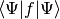
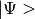
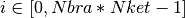

InhomogeneousQuadrature¶
About the InhomogeneousQuadrature class¶
The WaveBlocks Project
@author: R. Bourquin @copyright: Copyright (C) 2010, 2011, 2012 R. Bourquin @license: Modified BSD License
Inheritance diagram¶
Class documentation¶
- class WaveBlocks.InhomogeneousQuadrature(QR=None, order=None)¶
- build_matrix(pacbra, packet, operator=None)¶
Calculate the matrix representation of .
Parameters: - pacbra – The wavepacket
 from the bra with components and basis size of .
from the bra with components and basis size of . - packet – The wavepacket  from the ket with components and basis size of .
- operator – A function with two arguments .
Returns: A square matrix of size .
- pacbra – The wavepacket
- build_qr(qorder)¶
Create a quadrature rule of the given order.
Parameters: qorder – The order of the quadrature rule.
- get_qr()¶
Return the GaussHermiteQR instance used for quadrature.
Returns: The current instance of the quadrature rule.
- mix_parameters(Pibra, Piket)¶
Mix the two parameter sets and from the bra and the ket wavepacket.
Parameters: - Pibra – The parameter set from the bra.
- Piket – The parameter set from the ket.
Returns: The mixed parameters and . (See the theory for details.)
- quadrature(pacbra, packet, operator=None, summed=False, component=None, diag_component=None)¶
Performs the quadrature of for a general
 .
.Parameters: - pacbra – The wavepacket from the bra with components and basis size of .
- packet – The wavepacket from the ket with components and basis size of .
- operator – A real-valued function .
- summed – Whether to sum up the individual integrals
 .
. - component – Request only the i-th component of the result. Remember that .
- diag_component – Request only the i-th component from the diagonal entries, here
Returns: The value of . This is either a scalar value or a list of scalar elements.
Note
‘component’ takes precedence over ‘diag_component’ if both are supplied. (Which is discouraged)
- pacbra – The wavepacket
- set_qr(QR)¶
Set the GaussHermiteQR instance used for quadrature.
Parameters: QR – The new GaussHermiteQR instance.
- transform_nodes(Pibra, Piket, eps, QR=None)¶
Transform the quadrature nodes such that they fit the given wavepacket.
Parameters: - Pibra – The parameter set from the bra.
- Piket – The parameter set from the ket.
- eps – The epsilon of the wavepacket.
- QR – An optional quadrature rule providing the nodes.